How to create a Data Preparation
Data Preparation requires the optional Livy/Spark integration and a data source enabled for prepared data. Apply transformations to a preview, review the resulting schema and save the output as a dataset. See Manual installation for deployment prerequisites.
What is Data Preparation for?
The Data Preparation is a functionality available since version 8.1 that allows the users to create a prepared dataset, starting from an existing one. In this way users can apply transformations to a dataset to be used inside a dashboard or simply using it as another different dataset. Users have the capability of creating complex and specific datasets quite easily and quickly, in order to use them for any purpose.
Preparing a dataset
The first step is selecting a dataset to work on. You can do it selecting the desired dataset into your workspace section:
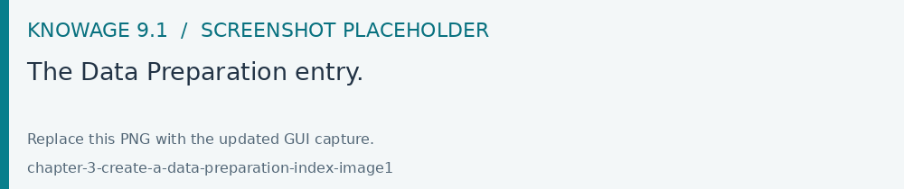
Fig. 594 The Data Preparation entry.
There are two ways to prepare and start a data preparation process. The first one is starting from MyData section and then selecting/searching the desired dataset. Once the dataset has been selected click the OPen Data Preparation option from the three dots menu as shown below.
The option Opening the data preparation triggers a process that will create the avro file (for more information see the dedicated section). This process consists of five steps
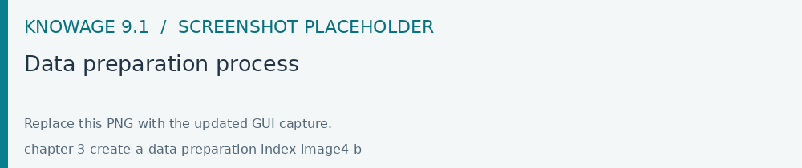
Fig. 595 Data preparation process
After completing the last step, the interface shows the structure of the dataset with the associated information.
Fig. 596 Data preparation wizard
As highlighted above, the wizard contains the transformation functionalities allowing to work on the data preparation.
The second way consists in clicking the Plus button on the top right of the section in order to select the dataset.
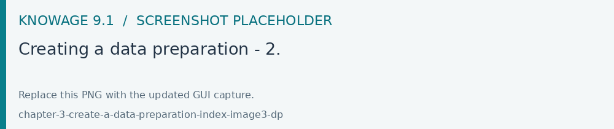
Fig. 597 Creating a data preparation - 2.
After clicking Open the data preparation process starts as depicted above in the first option to create the prepared dataset. Also in this second case the avro file will be created. Note that this process starts only the firts time the dataset is prepared and saved.
In case of an already existing dataset you could be able to open it always by clicking the Open in Data Preparation from Data Preparation and this time the final wizard with the data of the dataset is displayed.
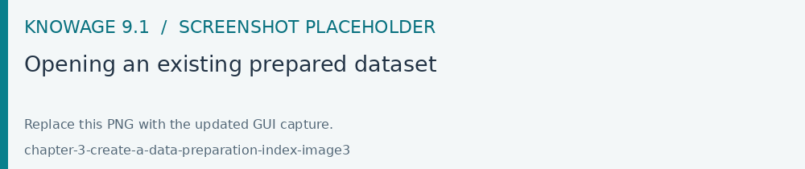
Fig. 598 Opening an existing prepared dataset
Data Preparation Transformations
You can apply transformations to the source dataset just picking the transformation action, step by step, until you reach the desired result.
In the main toolbar menu, there is a set of main transformations (most of them can be applied on many columns in the same time):
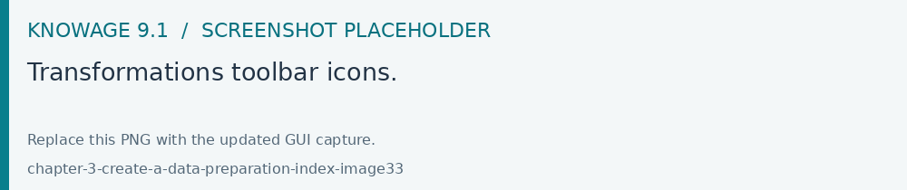
Fig. 599 Transformations toolbar icons.
Add column: Adds a new column as a calculated field.
Merge columns: Adds a new column merging two selected ones.
Split columns: Adds two columns splitting a selected one.
Filter: Filters a selected column by math conditions (more info later on).
Padding: Adds characters on left or right side of a selected column.
Remove duplicates: Removes duplicates from selected columns.
Remove null: Removes null values from selected columns.
Replace: Replace selected values from specific columns.
Trim: Removes white spaces from specific columns. (Available for single column only)
Drop: Remove a specific columns. (Available for single column only)
The Add column transformation allow user to add a calculated field of type numeric, string or temporal. These functions are a subset of Spark SQL language functions and are used for calculations or handling with data. The available functions are a subset of the Spark SQL language functions. For more info see https://spark.apache.org/docs/2.4.8/api/sql/index.html.
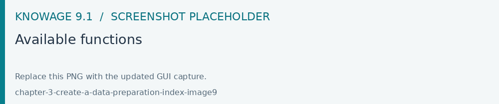
Fig. 600 Available functions
Merge columns: to add a new column by merging two selected columns through a separator.
Fig. 601 Merge columns dialog.
Split columns: to create two new columns by splitting a selected column through a specific condition (ie a character).
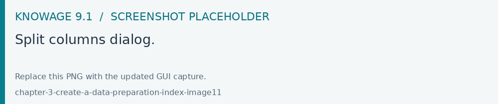
Fig. 602 Split columns dialog.
Filter: to filter a selected column by special conditions.
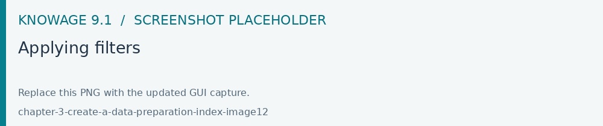
Fig. 603 Applying filters
The image below shows how to remove a filter.
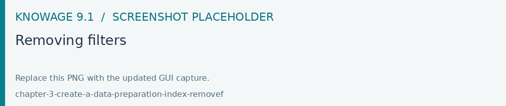
Fig. 604 Removing filters
As you can see the transformation applied by a filter is highlighted. In this example we only have one trasnformation related to the filter.
Padding: to add characters on left or right side of a selected column.
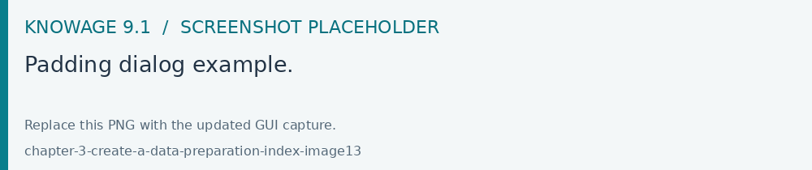
Fig. 605 Padding dialog example.
Remove duplicates: Removes duplicated values from a selected column.
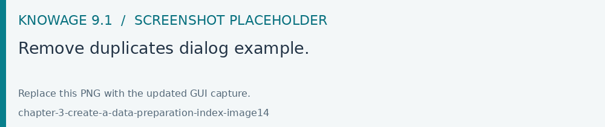
Fig. 606 Remove duplicates dialog example.
Remove null: Removes null values from a selected column.
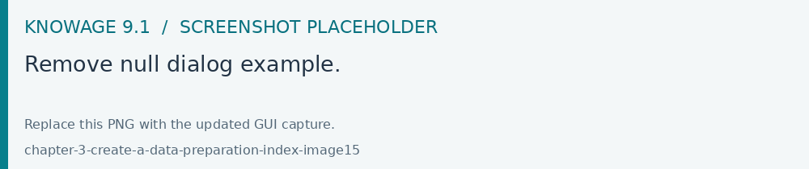
Fig. 607 Remove null dialog example.
Replace: Replace selected values from specific columns. Old char is the old value to be replaced.
Fig. 608 Replace dialog example.
From the three dots menu of a specific column two more transformations are available: TRIM and DROP transformations.
Drop column: Removes a specific column from table.
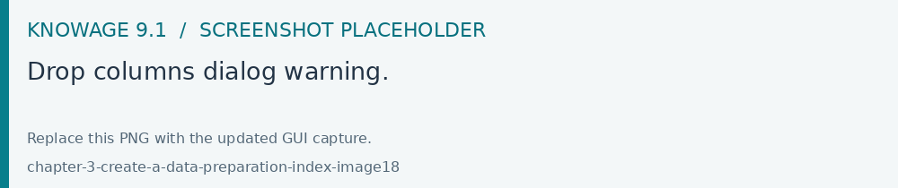
Fig. 609 Drop columns dialog warning.
Trim column: Removes white spaces from column.
Fig. 610 Trim column dialog example.
Data Preparation technical details
What is an AVRO file?
Avro is a data serialization system.
Avro is a data serialization framework developed within Apache’s Hadoop project. It uses JSON for defining data types and protocols, and serializes data in a compact binary format.
Avro relies on schemas. When Avro data is read, the schema used when writing it is always present. This permits each datum to be written with no per-value overheads, making serialization both fast and small. This also facilitates use with dynamic, scripting languages, since data, together with its schema, is fully self-describing.
When Avro data is stored in a file, its schema is stored with it, so that files may be processed later by any program. If the program reading the data expects a different schema this can be easily resolved, since both schemas are present.
Please refer to official documentation for more info: https://avro.apache.org/
Avro is used for store Knowage datasets data and schema (with columns metadata) in order to use them as input source for Data Preparation process.
When user open a dataset for data preparation for the first time, ad avro file is created. This file is read and then it will be used as data source for data transformations that will be sent to Livy-Spark.
Saving and Using a prepared dataset
After applying all the trasformation to the original dataset you can save it. The image below shows an example with a daily schedulation.
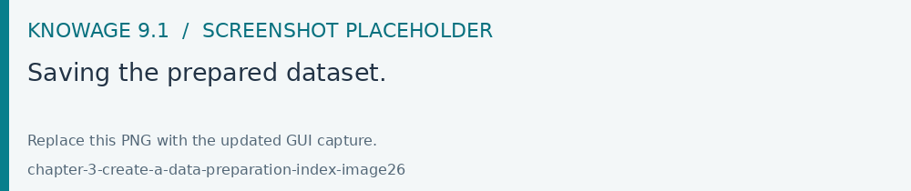
Fig. 611 Saving the prepared dataset.
After saving, the prepared dataset will be available in the list of all the prepared datasets.
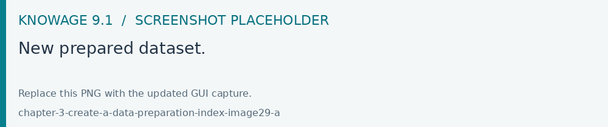
Fig. 612 New prepared dataset.
You can use the preview functionality to display all the contents.
Fig. 613 Preview functionality.
You can monitor the process by clicking on Monitoring from the three dots menu.
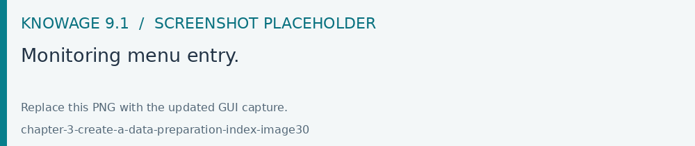
Fig. 614 Monitoring menu entry.
The Schedulation details are visualized from a pop-up. You can change them and save in case.
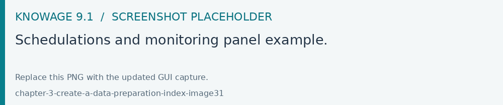
Fig. 615 Schedulations and monitoring panel example.
It is possible to see the prepared dataset into the Dataset Management section. In our example if you look for dataset ds__9056592 you should find it.
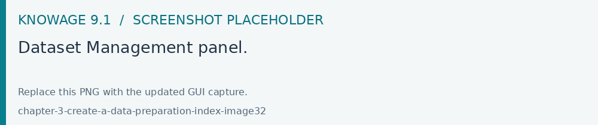
Fig. 616 Dataset Management panel.